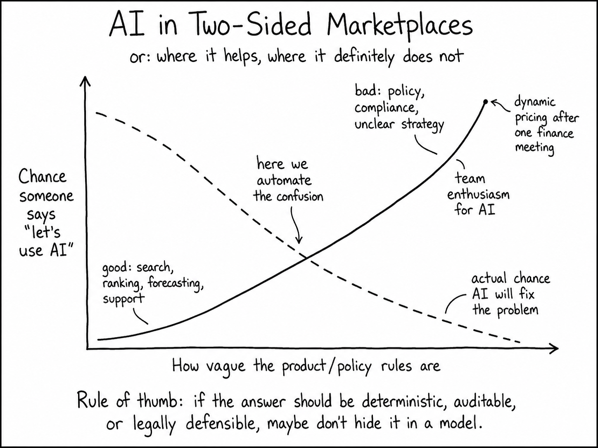

Selected Thinking
Don't Hide Marketplace Problems in a Model
From my experience working with two-sided marketplaces, one thing has become very clear to me: AI is useful in many parts of the marketplace, but it should not be treated as a magic layer that can solve every marketplace problem.

A two-sided marketplace is a living system. There is demand on one side, supply on the other, and a lot of friction in between. Customers need something. Providers, workers, sellers, hosts, or suppliers have their own preferences, capacity, incentives, and constraints. The platform sits in the middle and tries to create trust, liquidity, quality, and sustainable growth.
That means marketplace problems are rarely just technical problems.
They are usually a mix of prediction, ranking, search, operations, pricing, trust and safety, supply and demand balance, incentives, policy, user experience, and long-term marketplace health.
This is why I think the best use of ML and AI in two-sided marketplaces is not to "let the model decide everything". The best use is to help the marketplace become more aware and more responsive.
Aware of demand. Aware of supply. Aware of friction. Aware of risk. Aware of intent. Aware of quality. Aware of where human intervention is needed.
ML is good at predicting signals. AI is good at understanding messy context. But marketplace strategy still needs human judgement, product thinking, and clear rules.
The mistake: treating every marketplace problem as an AI problem
There is a common pattern I have seen: once a company becomes excited about AI, everything starts to look like an AI problem.
Sometimes that is right. But often the real problem is not the lack of AI.
The real problem may be unclear product rules, poor data quality, weak operational process, insufficient supply, low demand intent, bad incentives, unclear ownership, lack of trust, or a marketplace policy that has not been properly defined.
AI can make a good marketplace system smarter. But it can also make a confused system more confusing.
Before using ML or AI, I like to ask:
Is this a prediction problem, a decision problem, an operations problem, a policy problem, or a user experience problem?
That question matters because each type of problem needs a different solution.
Where ML and AI are usually useful
1. Understanding demand
Demand is often messy. Customers do not always know how to describe what they need. They may write incomplete job descriptions, use vague language, skip important fields, or express needs in a way that does not fit the platform's taxonomy.
AI can help with extracting intent from text, classifying customer needs, identifying missing information, mapping free text to structured categories, detecting urgency, suggesting better questions, improving search queries, and helping customers describe their needs more clearly.
Useful model types include large language models, text classifiers, embedding models, named entity extraction, intent classification models, and retrieval-augmented generation for support and guidance.
Soft preferences can be inferred. Hard requirements should be checked.
2. Understanding supply
The supply side is just as important as the demand side. In many marketplaces, the platform does not fully understand its supply. A provider may have a profile, but the profile may be outdated, incomplete, too generic, or not reflective of their real preferences.
AI and ML can help understand provider skills, availability patterns, service preferences, location coverage, response behaviour, quality signals, historical performance, churn risk, acceptance likelihood, and whether a provider is underused or overloaded.
This is an underrated area. A lot of marketplace teams focus heavily on demand conversion, but supply understanding is just as important. If the platform does not understand its supply, it cannot create a reliable customer experience.
3. Search and discovery
Search is one of the most obvious areas where ML and AI can help. In simple marketplaces, keyword search and filters may be enough. But as the marketplace grows, search becomes more complex.
AI can improve search through semantic search, query understanding, synonym expansion, personalised search, hybrid search using both keywords and embeddings, and ranking based on behavioural and quality signals.
My view is that semantic search is very useful, but it should not replace structured filters. The strongest systems usually combine both.
Use filters and rules for things that must be true. Use AI and ML for relevance, intent, and ranking.
4. Ranking and recommendation
Ranking is one of the strongest ML use cases in two-sided marketplaces. Once the platform has a set of possible options, it needs to decide what to show first, what to recommend, or what to prioritise.
ML can help estimate probability of conversion, probability of response, probability of acceptance, expected quality, cancellation likelihood, complaint likelihood, customer satisfaction, provider satisfaction, and expected marketplace value.
In my experience, boosted tree models are often a very strong starting point. Marketplace data is usually tabular, behavioural, messy, and full of useful engineered features. Boosted trees work very well in that environment and are easier to debug than many deep models.
The risk is when ranking optimises only one metric. A ranking model that improves short-term conversion may still create long-term problems. Ranking is not just an ML problem. It is also a marketplace design problem.
5. Marketplace operations
A lot of marketplace value is created in operations: identifying jobs or requests at risk, prioritising manual intervention, routing work to the right operations team, detecting stuck journeys, recommending the next best action, summarising context for agents, and reducing repetitive manual work.
This is one of the best places to use AI, especially because the goal is often not full automation. The goal is better human leverage.
The model does not need to own the whole process. It just needs to make the human process more focused.
6. Trust, safety, and moderation
Trust is core infrastructure in a two-sided marketplace. If customers do not trust the supply side, they will not transact. If providers do not trust the platform or the demand side, they will leave. If bad behaviour is not detected early, the whole marketplace can suffer.
ML and AI can help with fraud detection, spam detection, unsafe message detection, suspicious behaviour detection, fake profile detection, policy violation classification, complaint triage, moderation queue prioritisation, and summarising evidence for review.
This is an area where I would be cautious about full automation. False positives can unfairly punish good users. False negatives can create serious harm. AI can support trust and safety. It should not become an invisible judge.
7. Forecasting liquidity
A marketplace is not only a set of individual user journeys. It is also a system of supply and demand.
Liquidity changes by region, category, time of day, day of week, season, price, customer segment, provider segment, and external conditions.
ML can help forecast demand volume, supply availability, expected shortage, expected over-supply, response time pressure, fulfilment risk, cancellation pressure, and operational workload.
This is one of the most valuable uses of ML because it helps the marketplace become proactive rather than reactive.
A platform should not only ask: "What happened?" It should also ask: "Where is the marketplace about to become unhealthy?"
8. Pricing and incentives
Pricing is one of the hardest areas in two-sided marketplaces. Incentives can help balance supply and demand, but they can also create bad behaviour if designed poorly.
ML can help estimate price sensitivity, supply elasticity, demand elasticity, likelihood of conversion at different price points, provider response to incentives, customer response to discounts, and the impact of incentives on retention or quality.
This is not an area where I would blindly use black-box optimisation. Pricing and incentives affect trust, fairness, earnings, affordability, and marketplace perception. The model can estimate likely impact. The business still needs to decide what is acceptable.
9. Customer and provider support
Support is another strong use case for AI. Marketplaces generate a lot of repetitive, context-heavy support work. Users ask similar questions, but each case has slightly different context.
AI can help with drafting responses, summarising conversations, retrieving policy information, suggesting next steps, classifying support tickets, detecting sentiment, identifying escalation risk, and helping agents understand history quickly.
This is a good area for copilots. AI can improve speed and consistency, but support still needs guardrails, especially when policies, payments, safety, or complaints are involved.
Where ML and AI are usually not the right answer
1. When the rules are not clear
If the business does not know what should happen, AI will not magically fix that. Questions about prioritisation, fair exposure, acceptable risk, escalation, edge-case policy, and trade-offs need product and business clarity first.
AI can help once the decision framework is clear. But if the rules are vague, the model may only automate the confusion.
2. When deterministic rules are required
Some things should not be predicted. They should be checked: eligibility, compliance, identity verification, licence requirements, payment rules, legal conditions, and safety exclusions.
Rules are for what must be true. ML is for what is likely to be true.
If the answer needs to be certain, auditable, and explainable, use rules. Do not hide it inside a model.
3. When the data is not ready
ML depends on data quality. If the platform has missing labels, inconsistent definitions, biased historical data, poor instrumentation, or unclear outcomes, the model will reflect those problems.
Common data issues include incomplete supply profiles, inconsistent customer inputs, biased historical exposure, missing negative outcomes, unclear success labels, poor tracking of manual interventions, offline decisions not captured in data, and feedback loops created by previous ranking systems.
In these cases, the first job may not be modelling. It may be instrumentation, taxonomy, data cleaning, or process design.
4. When the decision is high-stakes and not reviewable
AI should be used carefully when the decision affects someone's income, safety, access, or reputation.
AI may help with triage, summarisation, and recommendations. But final decisions often need review, policy, and accountability.
5. When the metric is too narrow
This is one of the biggest risks in marketplace ML. A model can improve one metric and damage the system.
In marketplaces, local optimisation can create global harm. That is why evaluation needs to include both sides of the marketplace, not just one funnel metric.
What model works better for what?
Here is the practical model map I use.
| Marketplace problem | Useful model type | Why |
|---|---|---|
| Customer intent understanding | LLMs, text classifiers, embeddings | Good for messy text and unstructured needs |
| Supply understanding | Classification, clustering, embeddings | Helps understand provider skills, preferences, and behaviour |
| Search | Semantic search, hybrid search, two-tower models | Helps users find relevant supply even with imperfect queries |
| Ranking | GBDT, learning-to-rank, calibrated classifiers | Strong for marketplace behavioural and tabular data |
| Conversion prediction | Logistic regression, GBDT, calibrated models | Useful for simple, measurable outcomes |
| Response or acceptance prediction | Calibrated classifiers, survival models | Helps estimate whether an interaction is likely to progress |
| Cancellation or no-show risk | Classification, survival models | Useful for operational risk management |
| Churn prediction | GBDT, survival models, sequence models | Helps detect users or providers likely to leave |
| Intervention targeting | Uplift models, causal inference | Better than predicting risk alone |
| Pricing and incentives | Causal models, elasticity models, bandits | Useful when action impact matters |
| Trust and safety | Rules, classifiers, anomaly detection, graph ML | Good for risk detection and queue prioritisation |
| Support automation | LLMs with retrieval and guardrails | Good for drafting, summarising, and retrieving policy |
| Demand and supply forecasting | Time-series, hierarchical forecasting | Helps manage liquidity proactively |
| Scheduling and allocation | Optimisation plus ML predictions | Better for constrained operational decisions |
| Policy and strategy | Human decision-making with data support | Requires judgement, values, and accountability |
A simple way to think about it
Most marketplace AI problems can be broken into four layers:
ML is strongest in the signal layer. It can predict conversion, response, churn, risk, quality, and future behaviour.
But the decision layer is different.
This is where many marketplace AI systems go wrong. They treat prediction as if it is the decision.
A high predicted conversion does not automatically mean the platform should prioritise that option. The platform may also need to consider fairness, quality, risk, supply pressure, user trust, and long-term liquidity.
My preferred pattern
1. Use rules for hard constraints
Anything legal, safety-related, eligibility-based, or non-negotiable should be explicit.
2. Use ML for prediction
Use models to estimate likelihood, risk, quality, intent, and future behaviour.
3. Use optimisation or product logic for decisions
Do not expect the model score to be the whole decision. Combine the score with rules, constraints, business priorities, and user experience.
4. Use humans for judgement-heavy cases
For high-stakes, ambiguous, or sensitive decisions, AI should support humans rather than replace them.
5. Monitor marketplace-level impact
Do not only monitor model accuracy. Monitor marketplace health: demand-side experience, supply-side experience, liquidity, fulfilment, fairness, trust, complaint rate, retention, operational load, and long-term value.
Final thought
My view is that AI should not be treated as a separate magic brain sitting on top of the marketplace.
It should be treated as part of the marketplace operating system.
Sometimes it predicts. Sometimes it retrieves. Sometimes it ranks. Sometimes it summarises. Sometimes it detects risk. Sometimes it helps humans move faster. Sometimes it should stay out of the decision completely.
The real skill is knowing which is which.
In two-sided marketplaces, the best AI systems are not the ones that automate everything. They are the ones that help the marketplace make better decisions, with clearer signals, better timing, stronger guardrails, and a deeper understanding of both sides.